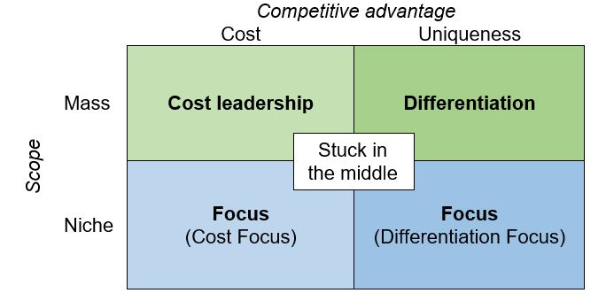

IB Docs (2) Team
IB Docs (2) Team

BMT 10 - Porter's generic strategies (HL only)
Professor Michael Porter (b.1947) of Harvard Business School is known throughout the world for his academic work on business strategy. One of his most used tools is Porter's generic strategies, featured in his best-seller "Competitive Advantage" (1985), which outlines the ways that any business - of any size and operating in any industry - can gain a competitive advantage.
If a profitable product or idea can be copied easily, then other firms will simply take advantage by entering the market and taking market share from the existing firm(s) in the industry. Rival businesses might offer an improved product or charge more competitive prices. Hence the original firm in the market loses its competitive advantage.
Porter argued that every successful business must have a competitive advantage to prevent profits being eroded by rival businesses entering the market. A Competitive advantage refers to any factor that enables a business to be more appealing to customers, such as having a unique selling point, or being able to produce goods or services better or cheaply than its rivals. Porter suggested that there are three generic or broad strategies that any business can use to sustain a competitive advantage: (i) cost leadership, (ii) differentiation, and (iii) focus.

Porter's four generic strategies for competitive advantage
1. Cost leadership
Cost leadership is a generic strategy that aims to establish a competitive advantage by achieving the lowest operational costs in the market for a particular good or service. It means to become the lowest cost supplier of a product within the market. Examples include providers of low-cost accommodation (such as youth hostels) and budget airlines
Cost leadership is concerned with minimising costs of production. For example, McDonald’s sells its fast food products at lower prices than premium burger restaurant chains such as Five Guys, Shake Shack, or MAX Burgers. For a cost leadership strategy to succeed, a business needs to be able to reduce its operational costs substantially. McDonald’s large scale operations enables the world's largest fast food brand to achieve huge economies of scale thereby enabling the company to reduce its average or unit costs of production.
Other examples of companies that use a cost leadership strategy include:
AirAsia - Malaysia's low-cost airline carrier, which is also the largest in Southeast Asia.
Aldi - Germany’s largest chain of discount supermarkets
Costco - American multinational wholesaler and retailer
IKEA - the world's largest furniture retailer
Budget airlines use a cost leadership strategy
Adopting a cost leadership strategy means the business can price its products the same as its competitors but earn a higher profit (because the firm's costs are lower). Alternatively, the cost leader can lower its prices below those charged by its rivals in order to attract more customers and therefore gain higher market share.
Although these firms might charge low prices, they are highly profitable and market leaders in their respective industries. They do not compete with firms that offer higher-quality products since this would require price hikes. The only way to directly compete with these firms is by using penetration or predatory pricing strategies. Alternatively, firms might choose to use technology to cut wastage and to improve productivity, thereby reducing unit costs of production. Hence, cost leaders can enjoy greater profit margins.
However, to become and remain a cost leader can mean the business has to continually innovate and create new ways to reduce costs. Furthermore, the strategy can be risky as rivals with similar market power can simply try to match the price cuts, which could lead to a price war. Also, cost leaders might develop a reputation for low quality, due to the low prices. This is not necessarily a perception that the business wants to earn. Finally, cost leaders are dependent on a high volume of sales to generate profit, due to the relatively low profit margins.
Box 1 - Features of low-cost (budget) airlines
Generally charge low fares
Use less congested (cheaper) airports to reduce costs
Charge extra for food and drink - no hot meals (which cuts costs further), just snacks and drinks
Extra charges for: priority booking, seat allocation and baggage
Limited services (flight destinations)
Single class travel (no business or first class)
Single type of aircraft used (reduces training costs and servicing costs)
No in-flight entertainment – or provided at an extra charge
No seat recliners and no seat pockets (for magazines and other items).
Methods to achieve cost leadership
Economies of scale - Operating on a larger scale can enable firms to gain from lower unit costs of production. These cost-saving benefits of being large enable the business to charge lower prices whilst maintaining their profit margins.
Improved supply chains - Having more efficient methods of distribution also help to reduce costs of production. Some businesses own their suppliers, thereby avoiding the profit margins in the form of higher prices otherwise charged by their suppliers. Some supermarket chains, for example, own their own farms that supply their products. Zara, the Spanish clothes retail giant, also owns many of its suppliers. IKEA, the world's largest furniture retailer, designs and develops all its own products.
Relocation - A business can be located nearer to its suppliers and/customers in order to reduce transportation and distribution costs.
Insourcing production - Firms may be able to manufacture goods and/or provide services in-house at a lower cost than an outsourced third-party provider. This may be due to efficiency gains by insourcing and/or due to the profit margin imposed by outsourced providers.
Top tip!
Remember that cost leadership, as a generic strategy, is about minimizing the cost to the business that is supplying goods or services. This is not the same as the price of the product that is charged to customers.
ATL Activity 1 (Research skills)
Read this article about 7 brilliant cost leadership examples from the likes of McDonald's, Walmart, RyanAir, Primark, and IKEA.
2. Differentiation
A second generic strategy is differentiation. This happens when a firm makes its mass-market products distinct from those of its competitors, e.g., by packaging or branding. Attention is on the quality rather than the cost (and hence the price) of a product. Adidas, Mercedes-Benz, Nike, and Apple all use this strategy to maintain their competitive advantage. Successful differentiation enables a business to charge a premium price. which in turn raises the firm's profit margins.
Successful differentiation will allow a business to charge a premium price (a price higher than the industry average), thereby earning a higher profit margin. A key drawback of differentiation is that it can be expensive, such as the amount of money needed to successfully develop and promote a high-quality product that stands out from others available on the market. These businesses might choose to use copyrights and patents to protect their competitive advantage.
ATL Activity 2 (Research skills)
Read this article about some brilliant differentiation examples from the likes of Apple, Tiffany & Co., Hermés, Tesla, Harley Davidson, Nespresso, and Coca-Cola.
3. Focus
The third generic strategic is called focus. A focus strategy has two variants - businesses gain a competitive advantage by either focusing on being a low cost producer (cost focus), such as discount bric-a-brac stores, or by differentiation within a particular segment (differentiation focus) such as Ferrari, Gucci, Rolex, Dyson, and Chanel.
Cost focus (a focused cost leadership strategy) requires businesses to compete based on price to target a narrow market (niche market customers). The strategy involves a business charging low prices relative to competitors that operate within the target market. Costs can be kept low by concentrating on a limited number of products or by focusing on a small geographical area.
Differentiation focus (a focused differentiation strategy) occurs when a business targets a niche or single segment of the market. For example, InThinking focuses on (specialiZes in) providing dedicated high-quality online resources to support IB Diploma, IGCSE, and MYP teachers and students. Differentiation focus can be a highly profitable strategy due to the high prices that can be charged (and hence the high profit margins) and due to the lack of competition. The drawback is that the market size is rather limited.
Ferrari uses a differentiation focus strategy
Top tip!
The two focus strategies ("Cost focus" and "Differentiation focus") often cause some confusion as they could be interpreted as meaning "a focus on cost" (a cost leadership strategy) or "a focus on differentiation" (a differentiation strategy). However, remember that focus strategies focus on focused markets.
Instead, remember that:
Cost focus means a business emphasizes cost-minimization within a focused (narrow or niche) market.
Differentiation focus means a business pursues strategic differentiation within a focused (narrow or niche) market.
Stuck in the middle
Michael Porter suggests that it is not possible in the long term to adopt a mixture of these three generic strategies. For example, it is not feasible or sustainable to maintain high quality by using a cost leadership strategy, i.e. firms cannot expect to be highly profitable and to have an image of outstanding quality by charging low prices. Porter suggests that firms without a clear business strategy are ‘stuck in the middle’, with detrimental consequences.
Being stuck in the middle means a business is neither a cost leader or a differentiator, and that it is not focused either, i.e. it does not specialise in a narrow (niche) market or a broad (mass) market. This would create confusion for both internal and external stakeholders of the business, Without any competitive advantages and the inability to gain customer loyalty.
Summary of Porter's generic strategies
As a Business Management decision making tool, Michael Porter’s generic strategies help managers and decision makers to concentrate on a specific strategy that best serves their organizations. Porter's generic strategies (sometimes referred to as competitive strategies) can help businesses to gain a competitive edge and increase profitability if executed appropriately. The tool outlines the ways that any business can gain a competitive advantage:
Cost leadership in mass markets
Differentiation in mass markets
Focus - Cost focus or differentiation focus in narrow (focused or niche) markets.
Professor Porter argued that every successful business must have a competitive advantage to prevent profits being eroded by rivals entering the market.
Developed in 1980, and over 40 years later, Porter's generic strategies are still widely applicable to almost any business around the world although perhaps with some slight modifications and new perspectives.
Watch this short video clip to recap your understanding of Porter's generic strategies as a Business Management decision making tool.
Review Quiz - Porter's generic strategies
With reference to Porter's generic strategies, identify the correct strategy to gain a competitive advantage (cost leadership in mass markets, differentiation in mass market, or focus in narrow - focused or niche - markets from the examples given below.
| Statement / feature | Generic strategy |
| 1. Culture of reducing costs | |
| 2. Focus on high quality | |
| 3. Focus on segmentation | |
| 4. Uniqueness | |
| 5. Adding value through product differentiation | |
| 6. Targeting | |
| 7. Mass markets strategies | |
| 8. Niche market strategies | |
| 9. Economies of scale | |
| 10. High costs of production | |
| 11. Focused markets | |
| 12. Premium prices | |
| 13. Attempts to become the cheapest supplier | |
| 14. Control of overheads (expenses) | |
| 15. Focus on branding | |
| 16. Limited competition | |
| 17. Focus on research and development (R&D) | |
| 18. Price competition | |
| 19. Limited economies of scale | |
| 20. Cost advantages result in higher profit margins | |
| 21. Very high prices in niche markets |
| Statement / feature | Generic strategy |
| 1. Culture of reducing costs | Cost leadership |
| 2. Focus on high quality | Differentiation |
| 3. Focus on segmentation | Focus |
| 4. Uniqueness | Differentiation |
| 5. Adding value through product differentiation | Differentiation |
| 6. Targeting | Focus |
| 7. Mass markets strategies | Cost leadership |
| 8. Niche market strategies | Focus |
| 9. Economies of scale | Cost leadership |
| 10. High costs of production | Differentiation |
| 11. Focused markets | Focus |
| 12. Premium prices | Differentiation |
| 13. Attempts to become the cheapest supplier | Cost leadership |
| 14. Control of overheads (expenses) | Cost leadership |
| 15. Focus on branding | Differentiation |
| 16. Limited competition | Focus |
| 17. Focus on research and development (R&D) | Differentiation |
| 18. Price competition | Cost leadership |
| 19. Limited economies of scale | Focus |
| 20. Cost advantages result in higher profit margins | Cost leadership |
| 21. Very high prices in niche markets | Focus |
Teachers can download a PDF version of this quiz to use with their students in class by clicking on the icon below.
Lidl is a highly successful discount supermarket chain, with more than 12,000 stores and operations in 31 countries across Europe and America. The company was founded in 1932 and sells mainly "no frills" (unbranded or its own branded) food and non-food products at affordable prices in order to gain a competitve advantage.
Around 90% of the company's products are manufactured specifically for Lidl. The company also claims to offer products for as much as 50% less than in some of their competitors' stores.
Lidl passes on cost savings to customers by using numerous approaches such:
Offering only a limited range of products - whilst there is a lot of volume of products, there is only a limited number of items offered.
Displaying most goods in their original delivery cartons that they were shipped in. Customers take the product directly from the carton on the shelves.This speeds up the restocking process and requires fewer labour hours.
Stocking only fast-moving consumer goods (FMCGs), i.e., everyday products or convenience goods that customers buy often.
Operating mainly relatively small stores, which helps to keep down the cost of rent and operational expenses.
Using low-budget marketing, such as using only local radio advertisements and lsocial media platforms
Not playing any music in most of its stores.
| (a) | Define Porter’s generic strategies. | [2 marks] |
| (b) | In the context of Lidl, outline the meaning of a competitive advantage. | [2 marks] |
| (c ) | Explain two advantages and one disadvantage of a cost leadership strategy for Lidl. | [6 marks] |
Answers
(a) Define Porter’s generic strategies. [2 marks]
Porter's generic strategies is a strategic management tool that outlines the ways in which any business, of any size, and operating in any industry, can gain a competitive advantage. An example is cost leadership by offering low or affordable prices.
Award [1 mark] for a limited response that shows some understanding.
Award [2 marks] for a clear and accurate definition, similar to the example above.
(b) In the context of Lidl, outline the meaning of a competitive advantage. [2 marks]
A competitive advantage exists when a business gains an edge over its competitors in the industry. This can be achieved by offering lower prices, such as Lidl selling some of its products for up to 50% less than its rivals. This helps to attract more customers to shop at Lidl.
Award [1 mark] for a limited response that shows some understanding.
Award [2 marks] for a clear and accurate description, similar to the example above.
(c ) Explain two advantages and one disadvantage of a cost leadership strategy for Lidl. [6 marks]
Advantages could include an explanation of any two of the following points:
Lidl can price its products the same as its rival supermarkets but earn a higher profit.
Alternatively, Lidl can lower its prices for its goods, below those charged by its rivals, thereby attracting more customers and gaining higher market share.
Lidl, being a cost leader, is more able to withstand price wars, a common feature of the supermarket industry in many countries.
Similarly, as a cost leader, Lidl is more able to withstand lower demand in the economy during times of a recession.
Accept any other relevant advantage that is explained in the context of Lidl.
Possible disadvantages could include an explanation of any one of the following points:
Lidl will need to continually innovate and create new ways to reduce costs, beyond its use of keeping fast-moving consumer goods in their original cardboard boxes.
A cost leadership strategy can be risky as rival supermarket chains with similar market power can simply try to match Lidl's price cuts.
Lidl could develop an unwanted reputation for low quality, due to its low prices, especially in new overeas markets.
Lidl is dependent on a high volume of sales to generate profit, due to the relatively low profit margins, and the small number of products offered for sale in its stores.
Accept any other relevant disadvantage that is explained in the context of Lidl.
For each point, award [1 mark] for a relevant advantage or disadvantage, and a further [1 mark] for an accurate explanation of that point, up to the total of [6 marks].
Return to the Business Management Toolkit (BMT) homepage

 Twitter
Twitter
 Facebook
Facebook
 LinkedIn
LinkedIn